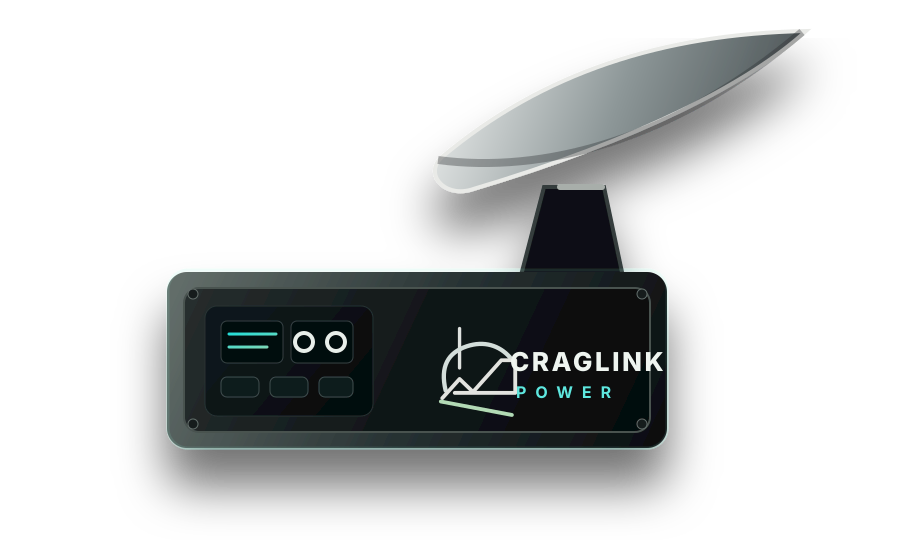

Not a power station.
A specific basecamp internet power system for one high-value job.
System architecture
CragLink Power is not trying to be every power station. The system is built around Starlink Mini use at remote basecamp: a right-sized battery, solar recovery, vehicle top-up path, and a stable DC output.

Design constraints
The product should stay narrow until customer demand proves expansion. The first job is Starlink Mini power, not a generic inverter box.
Customer-ready messaging
A specific basecamp internet power system for one high-value job.
Battery, solar, vehicle top-up, and clean Starlink Mini output in one planned architecture.
The first market should see real trip results, not only specs.